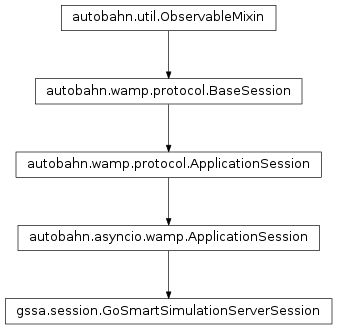

gssa package¶
Subpackages¶
Submodules¶
gssa.client module¶
-
class
gssa.client.GoSmartSimulationClientComponent(x, gssa_file, subdirectory, output_files, tmp_transferrer='/tmp', input_files=None, definition_files=None, skip_clean=False, server=None)[source]¶ Bases:
autobahn.asyncio.wamp.ApplicationSession
gssa.config module¶
-
gssa.config.get(key, default=None)[source]¶ Get a value from the global configuration.
If the config file is not loaded, it will be loaded when this is called.
Parameters: - key (str) – A dot-separated hierarchical key to find in the YAML configuration file.
- default (Optional) – Fall-back to return if the key is not found. Defaults to None.
gssa.database module¶
-
class
gssa.database.SQLiteSimulationDatabase(database)[source]¶ Bases:
object-
delete(simulation, soft=True)[source]¶ Remove a simulation from the database.
Parameters: - simulation (str) – GUID of the simulation.
- soft (Optional[bool]) – do a soft delete.
-
markAllOld()[source]¶ Mark simulations as exited if still appearing to run - usually on server start-up.
-
gssa.definition module¶
-
class
gssa.definition.GoSmartSimulationDefinition(guid, xml_string, tmpdir, translator, finalized=False, ignore_development=False, update_status_callback=None)[source]¶ Bases:
object-
create_xml_from_string(xml)[source]¶ Turn the string XML into an ElementTree object.
Parameters: xml (str) – string-version of GSSA-XML.
-
gssa.docker module¶
-
class
gssa.docker.OutputHandler(lock, loop=None, **kwargs)[source]¶ Bases:
hachiko.hachiko.AIOEventHandler,watchdog.events.FileSystemEventHandler
-
class
gssa.docker.Submitter[source]¶ Bases:
objectUtility to manage communication with dockerlaunch.
Submit the request to run an instance to the dockerlaunch daemon, also handling some of the standard bits and pieces of interface.
-
add_input(input_file)[source]¶ Set additional input.
Make a note that this file should be transferred to the Docker volume for the simulation
-
copy_output(requested, target)[source]¶ Retrieve output.
Copy output files from the Docker volume to the simulation ‘working directory’
-
output(requested, exists_only=False)[source]¶ Return the content of the file
requestedParameters: - requested (str) – file name to request
- exists_only (Optional[bool]) – only check existence, don’t load
Returns: file content unless exists_only set, then existence True/False.
Return type: str|bool
-
reader= None¶
-
run_script(loop, working_directory, image, files_required=[], magic_script=None)[source]¶ Run the simulation.
Parameters: - loop (asyncio.BaseEventLoop) – look to use for asynchronous calls.
- working_directory (str) – location of simulation configuration/definition.
- image (str) – a container image name. This must be known to dockerlaunch or it will refuse to run.
- files_required (Optional[array(str) – files to return as output.
- magic_script (Optional[str]) – DEPRECATED: script to upload to simulation container after all else in place as a trigger (default off).
-
set_update_socket(socket_location)[source]¶ Set the socket that the bridge container should use to communicate.
-
writer= None¶
-
gssa.error module¶
-
class
gssa.error.Error[source]¶ Bases:
enum.EnumGo-Smart error families.
These are the canonical errors for client use - wherever possible, the most applicable of these should be returned. They indicate where the fault is likely to lie.
-
exception
gssa.error.ErrorException(ref, message, *args, **kwargs)[source]¶ Bases:
RuntimeErrorAn exception wrapping
Error.
-
class
gssa.error.ErrorMessage[source]¶ Bases:
dictA trivial subclass of dict marking an ErrorMessage.
-
gssa.error.makeError(ref, message)[source]¶ A full error message (as returned via WAMP).
Parameters: - ref (gssa.error.Error|str) – a enum (or enum name) to categorize the error.
- message (str) – free-form error information string.
Returns: a dictionary with entries
id(int),code(str) andmessage. The former two are representations of theErrorenum, the integer (ordinal) value and string name respectively.Return type:
gssa.family module¶
-
class
gssa.family.Family[source]¶ Bases:
objectEssential routines for Families.
-
family_name= None¶
-
get_needle_parameter(needle_index, key, try_json=True)[source]¶ Retrieve a parameter for a given needle.
Needle index can be either needle index (as given in XML input) or an integer n indicating the nth needle in the order of the needles XML block.
-
get_parameter(key, try_json=True, parameters=None)[source]¶ Retrieve a parameter from the global (not needle) list.
-
gssa.http_transferrer module¶
-
class
gssa.http_transferrer.HTTPTransferrer[source]¶ Bases:
object
gssa.parameters module¶
gssa.server module¶
-
class
gssa.server.GoSmartSimulationServerComponent(server_id, database, publish_cb, ignore_development=False, use_observant=True, simdata_path='/tmp')[source]¶ Bases:
objectThis subclasses ApplicationSession, which runs inside an Autobahn WAMP session
-
client= None¶
-
current= None¶
-
doApi()[source]¶ com.gosmartsimulation.apiFind the current API version in use. The API version only needs to be bumped when backward-incompatible changes occur on either side
-
doClean(guid)[source]¶ com.gosmartsimulation.cleanRemove anything in simulation working directory, for instance
-
doCompare(this_xml, that_xml)[source]¶ com.gosmartsimulation.compareCheck whether two GSSA-XML files match and, if not, what their differences are.
-
doFinalize(guid, client_directory_prefix)[source]¶ com.gosmartsimulation.finalizeDo any remaining preparation before the simulation can start.
-
doProperties(guid)[source]¶ com.gosmartsimulation.propertiesReturn important server-side simulation properties.
-
doRequestDiagnostic(guid, target)[source]¶ com.gosmartsimulation.request_diagnosticPush a bundle of diagnostic files through the transferrer. If target is None, assume gateway is running a temporary HTTP on default client port
FIXME: this should be made asynchronous!
-
doRequestFiles(guid, files)[source]¶ com.gosmartsimulation.request_filesPush the requested output files through the transferrer and return the list that was sent.
-
doRequestResults(guid, target)[source]¶ com.gosmartsimulation.request_resultsPush a bundle of output files through the transferrer. If target is None, assume gateway is running a temporary HTTP on default client port
FIXME: this should be made asynchronous!
-
doRetrieveStatus(guid, allow_resync=True)[source]¶ com.gosmartsimulation.retrieve_statusGet the latest status for a simulation. allow_resync permits the server to update the DB if it finds an inconsistency.
-
doSimulate(guid)[source]¶ Start the simulation
This occurs in a separately scheduled coro from the RPC call so it will almost certainly have returned by time we do. This does not have an API endpoint as
doStart()is responsible for launching it asynchronously.
-
doUpdateFiles(guid, files)[source]¶ com.gosmartsimulation.update_filesAdd the passed files to the simulation’s reference dictionary of required input files (available to be requested later)
-
doUpdateSettingsXml(guid, xml)[source]¶ com.gosmartsimulation.update_settings_xmlSet the GSSA-XML for a given simulation
-
eventComplete(guid)[source]¶ Called when simulation completes
Publishes a completion event:
com.gosmartsimulation.complete
-
eventFail(guid, message)[source]¶ Called when simulation fails
Publishes a failure event:
com.gosmartsimulation.failed
-
getProperties(guid)[source]¶ Server-specific properties for this simulation
At present, just working directory location.
-
onRequestAnnounce()[source]¶ com.gosmartsimulation.request_announceRelease a status report on each simulation in the database
TODO: this gets unwieldy, perhaps it should have an earliest simulation timestamp argument?
-
onRequestIdentify()[source]¶ com.gosmartsimulation.request_identifyPublish basic server information.
$$ score = #cores - #active_simulations $$
This gives an availability estimate, the higher the better
-
setDatabase(database)[source]¶ Update database backend.
Mainly for start-up. Mark everything in-progress in the DB as not-in-progress/unfinished.
-
setStatus(id, key, message, percentage, timestamp)[source]¶ Record a status change in the database and on the filesystem.
Note that, for both those reasons, this could be slow and so should always be run with call_soon_threadsafe
FIXME: we need some sort of rate limiting here, or producer-consumer pattern with ability to skip once getting behind
-
gssa.session module¶
-
class
gssa.session.GoSmartSimulationServerSession(x, server_id, database, ignore_development=False, simdata_path='/tmp')[source]¶ Bases:
autobahn.asyncio.wamp.ApplicationSessionThis subclasses ApplicationSession, which runs inside an Autobahn WAMP session.

-
doApi()[source]¶ com.gosmartsimulation.apigssa.server.GoSmartSimulationServerComponent.doApi()Find the current API version in use. The API version only needs to be bumped when backward-incompatible changes occur on either side.
-
doCancel(guid)[source]¶ com.gosmartsimulation.cancelgssa.server.GoSmartSimulationServerComponent.doCancel()Prematurely stop a running simulation but bear in mind that no request for confirmation exists!
-
doClean(guid)[source]¶ com.gosmartsimulation.cleangssa.server.GoSmartSimulationServerComponent.doClean()Remove anything in simulation directory, for instance.
-
doCompare(this_xml, that_xml)[source]¶ com.gosmartsimulation.comparegssa.server.GoSmartSimulationServerComponent.doCompare()Check whether two GSSA-XML files match and, if not, what their differences are.
-
doFinalize(guid, client_directory_prefix)[source]¶ com.gosmartsimulation.finalizegssa.server.GoSmartSimulationServerComponent.doFinalize()Do any remaining preparation before the simulation can start.
-
doInit(guid)[source]¶ com.gosmartsimulation.initgssa.server.GoSmartSimulationServerComponent.doInit()Dummy call for the moment.
-
doProperties(guid)[source]¶ com.gosmartsimulation.propertiesgssa.server.GoSmartSimulationServerComponent.doProperties()Return important server-side simulation properties.
-
doRequestDiagnostic(guid, target)[source]¶ com.gosmartsimulation.request_diagnosticgssa.server.GoSmartSimulationServerComponent.doRequestDiagnostic()Push a bundle of diagnostic files through the transferrer.
-
doRequestFiles(guid, files)[source]¶ com.gosmartsimulation.request_filesgssa.server.GoSmartSimulationServerComponent.doRequestFiles()Push the requested output files through the transferrer and return the list that was sent.
-
doRequestResults(guid, target)[source]¶ com.gosmartsimulation.request_resultsgssa.server.GoSmartSimulationServerComponent.doRequestResults()Push a bundle of result files through the transferrer.
-
doRetrieveStatus(guid)[source]¶ com.gosmartsimulation.retrieve_statusgssa.server.GoSmartSimulationServerComponent.doRetrieveStatus()Get the latest status for a simulation.
-
doSearch(guid, limit=None)[source]¶ com.gosmartsimulation.searchgssa.server.GoSmartSimulationServerComponent.doSearch()Check for matching definitions.
-
doStart(guid)[source]¶ com.gosmartsimulation.startgssa.server.GoSmartSimulationServerComponent.doStart()Execute the simulation in a coro.
-
doUpdateFiles(guid, files)[source]¶ com.gosmartsimulation.update_filesgssa.server.GoSmartSimulationServerComponent.doUpdateFiles()Add the passed files to simulation’s reference dictionary of required input files (available to be requested later).
-
doUpdateSettingsXml(guid, xml)[source]¶ com.gosmartsimulation.update_settings_xmlgssa.server.GoSmartSimulationServerComponent.doUpdateSettingsXml()Set the GSSA-XML for a given simulation.
-
onJoin(details)[source]¶ Register methods and subscribes.
Fired when we first join the router - this gives us a chance to register everything.
-
onRequestAnnounce()[source]¶ com.gosmartsimulation.request_announcegssa.server.GoSmartSimulationServerComponent.onRequestAnnounce()Release a status report on each simulation in the database. TODO: this gets unwieldy, perhaps it should have an earliest simulation timestamp argument?.
-
onRequestIdentify()[source]¶ com.gosmartsimulation.request_identifygssa.server.GoSmartSimulationServerComponent.onRequestIdentify()Publish basic server information.
-
gssa.sftp_transferrer module¶
gssa.shadow_watcher module¶
gssa.tmp_transferrer module¶
gssa.transferrer module¶
gssa.translator module¶
-
class
gssa.translator.GoSmartSimulationTranslator[source]¶ Bases:
objectThis extracts basic information, common to all families, from GSSA-XML.